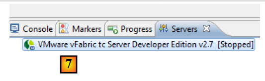
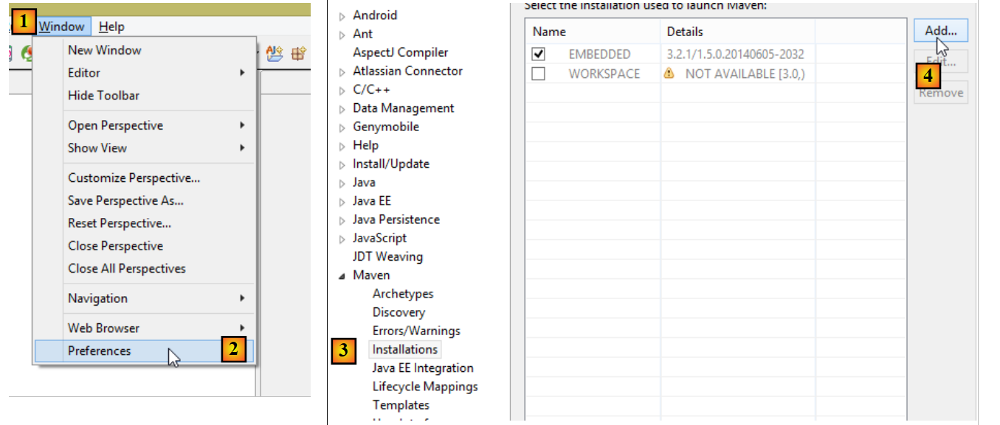
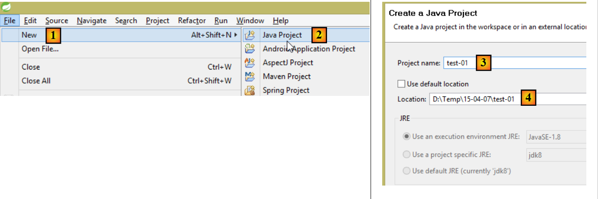
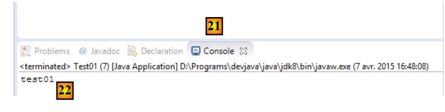
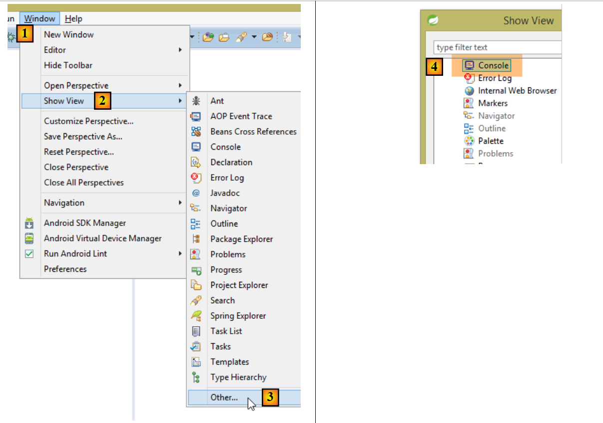
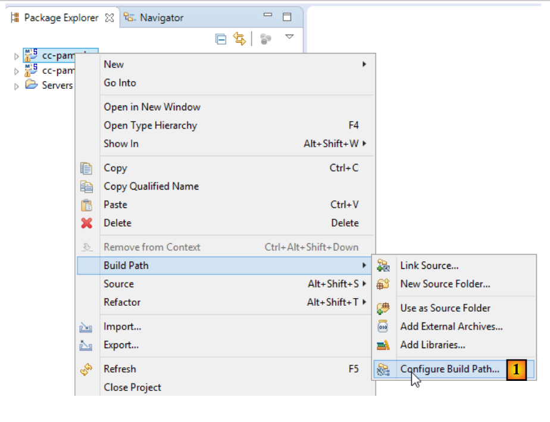
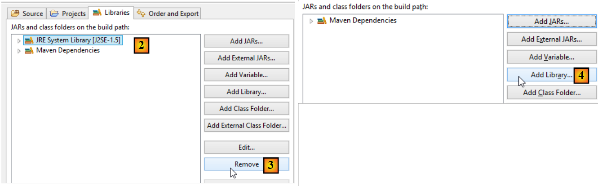
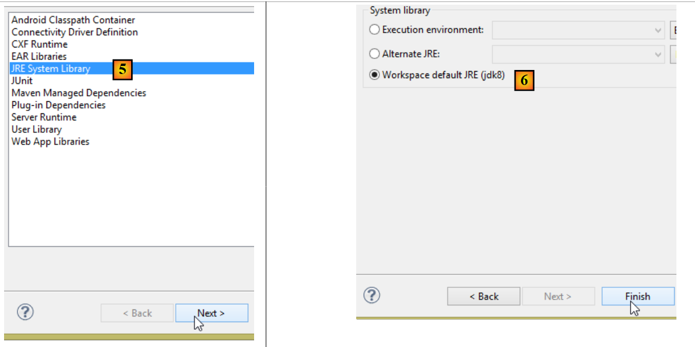
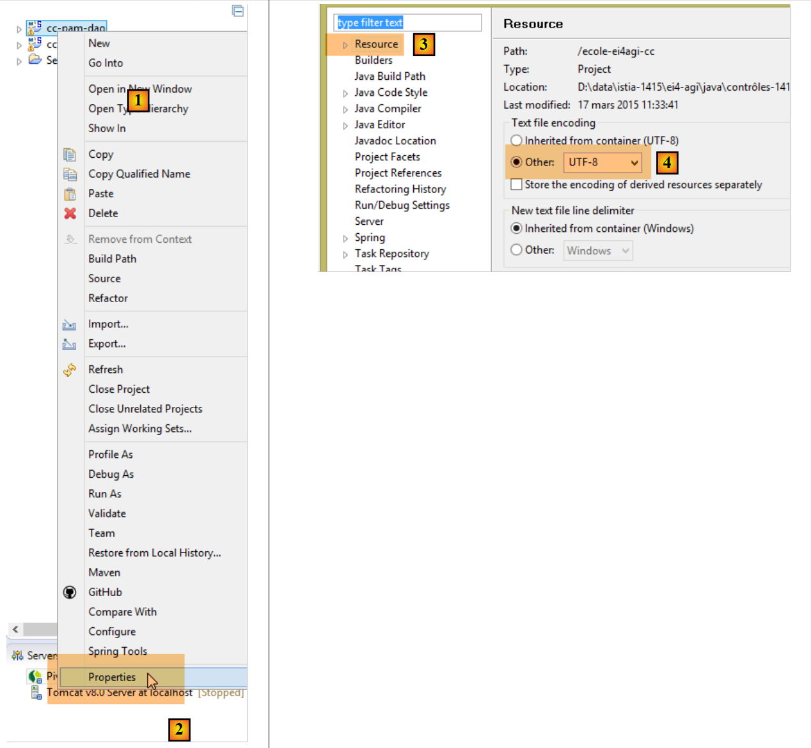

22. Bijlagen
Hier wordt uitgelegd hoe de in dit document gebruikte tools op Windows 7- of 8-computers kunnen worden geïnstalleerd. De schermafbeeldingen verwijzen doorgaans naar de 64-bits versies van de geïnstalleerde SGBD en tools. De lezer dient dit aan te passen aan zijn eigen omgeving.
22.1. Installatie van een JDK
In de URL is de [http://www.oracle.com/technetwork/java/javase/downloads/index.html] (oktober 2014) te vinden, de meest recente versie is de JDK. We zullen de installatiemap van de JDK hierna <jdk-install> noemen.
 |
22.2. Installatie van Maven
Maven is een tool voor het beheer van afhankelijkheden van een Java-project en nog veel meer. Het is (oktober 2014) beschikbaar via de URL en [http://maven.apache.org/download.cgi].
 |
Download het archief en pak het uit. We noemen de installatiemap van Maven <maven-install>.
 |
- In [1] configureert het bestand [conf / settings.xml] Maven;
Daarin staan de volgende regels:
<!-- localRepository
| The path to the local repository maven will use to store artifacts.
|
| Default: ${user.home}/.m2/repository
<localRepository>/path/to/local/repo</localRepository>
-->
De standaardwaarde op regel 4 kan problemen opleveren voor bepaalde software die gebruikmaakt van Maven, als uw {user.home}, net als bij mij, een spatie in het pad bevat (bijvoorbeeld [C:\Users\Serge Tahé]). We zullen (op regel 7) een andere map aanwijzen voor de lokale Maven-repository:
<!-- localRepository
| The path to the local repository maven will use to store artifacts.
|
| Default: ${user.home}/.m2/repository
<localRepository>/path/to/local/repo</localRepository>
-->
<localRepository>D:\Programs\devjava\maven\.m2\repository</localRepository>
Vermijd in regel 7 een pad dat spaties bevat.
22.3. Installatie van STS (Spring Tool Suite)
We gaan de SpringSource Tool Suite [http://www.springsource.com/developer/sts] (oktober 2014) installeren, een Eclipse-omgeving die vooraf is uitgerust met talrijke plug-ins die verband houden met het Spring-framework en tevens een vooraf geïnstalleerde Maven-configuratie bevat.
 |
- Ga naar de website van de SpringSource Tool Suite (STS) [1], om de huidige versie van STS [2A] [2B] te downloaden,
 |
 |
- het gedownloade bestand is een installatieprogramma dat de bestandsstructuur [3A] [3B] aanmaakt. In [4] start men het uitvoerbare bestand,
- in [5] verschijnt het werkvenster van IDE nadat het welkomstvenster is gesloten. In [6] wordt het venster met de applicatieservers weergegeven,
 |
- in [7], het venster met de servers. Er is één server geregistreerd. Dit is een Tomcat-compatibele server VMware.
Je moet in STS de installatiemap van Maven opgeven:
 |
- in [1-2] configureert u STS;
- in [3-4] voegt men een nieuwe Maven-installatie toe;
 |
- in [5], wijs je de installatiemap van Maven aan;
- in [6] sluit je de wizard af;
- in [7] wordt de nieuwe Maven-installatie ingesteld als standaardinstallatie;
 |
- in [8-9] controleert men de lokale Maven-repository, de map waarin de gedownloade afhankelijkheden worden opgeslagen en waarin STS de te bouwen artefacten zal plaatsen;
Je moet ook een JDK (Java Development Kit) kiezen om zowel Eclipse-projecten zonder als met Maven [1-5] uit te voeren.
 |
Met [4] kun je JDK (Java Development Kit) of JRE (Java Runtime Environment) toevoegen. De laatste kan .class-bestanden uitvoeren, maar kan de .java-bestanden niet compileren om ze te genereren. De JDK kan beide. We kiezen voor een JDK omdat bepaalde Maven-bewerkingen een JDK vereisen.
Om een Eclipse-project aan te maken, gaan we als volgt te werk:
 |
- in [3], geef het project een naam;
- in [4], selecteer je een bestaande, lege map;
 |
- in [5], het aangemaakte project;
- in [5-8], maak een pakket aan. Een pakket is een map die Java-code bevat. Twee klassen mogen dezelfde naam hebben als ze tot verschillende pakketten behoren. Binnen een project mogen er geen twee pakketten met dezelfde naam zijn. Daarom mag u geen pakketnaam gebruiken die al voorkomt in een van de afhankelijkheden van het project. Een bedrijf zal als pakketnaam een naam gebruiken die het bedrijf, het project en de verschillende takken daarvan aangeeft;
 |
- in [9], geef het pakket een naam;
- in [10], het aangemaakte pakket;
 |
- in [11-13], maak je een klasse aan in het aangemaakte pakket;
 |
- in [14], geef de klasse een naam (moet voldoen aan de norm CamelCase – elk woord in de naam moet beginnen met een hoofdletter, gevolgd door kleine letters);
- in [15], controleer het pakket;
- in [16], vink het vakje aan. Hiermee wordt gevraagd om de statische methode [main] te genereren. Deze methode maakt een klasse uitvoerbaar, d.w.z. de eerste klasse die in een project moet worden uitgevoerd;
- in [17], de zo aangemaakte klasse;
Typ in de methode [main] de volgende code in, die een tekst op de console weergeeft:
package st.istia;
public class Test01 {
public static void main(String[] args) {
System.out.println("test01");
}
}
 |
- Voer in [18-20] de klasse uit. De methode [main] wordt dan uitgevoerd;
 |
- in [21-22], het resultaat van de toepassing;
Als de weergave [Console] niet aanwezig is, ga dan als volgt te werk met [1-4]:
 |
Het kan voorkomen dat er bij het importeren van een Eclipse-project fouten optreden. Dit kan te wijten zijn aan een onjuiste configuratie van het project. Ga als volgt te werk om de fout (indien aanwezig) te verhelpen:
 |
- in [1], wijzig het [Build Path] van het project;
 |
- in [2]: het project is geconfigureerd om een JVM 1.5 te gebruiken;
- in [3], verwijder deze afhankelijkheid;
- in [4], voeg een nieuwe afhankelijkheid toe;
 |
- in [5] voeg je een JVM toe;
- in [6], kies je de JVM van het item;
Zodra dit is gebeurd, bevestigen we alles en gaan we verder met de eigenschap [Java compiler] van het project [7]:
 |
- in [8] vragen we de compiler om alle kenmerken van de Java-taal tot en met versie 1.7 (of 1.8) te accepteren;
- in [9] wordt gevalideerd;
- met [10] mag het aldus opnieuw geconfigureerde project geen fouten meer vertonen;
Bovendien kan het geïmporteerde project gebruikmaken van een UTF-8-tekenset. Ga als volgt te werk om deze tekenset in het geïmporteerde project [1-4] in te stellen:
 |
Daarnaast kan het nuttig zijn om de spellingcontrole in het project uit te schakelen, om te voorkomen dat opmerkingen in het Frans als onjuist worden gemarkeerd. Volg de onderstaande stappen:
 |
22.4. Installatie van IDE NetBeans
NetBeans is beschikbaar via de URL [http://netbeans.org/downloads/].
 |
Hierboven kunt u de Java-versie SE (Standard Edition) downloaden.
22.5. Installatie van de Chrome-plug-in [Advanced Rest Client]
In dit document gebruiken we de Chrome-browser van Google (http://www.google.fr/intl/fr/chrome/browser/). We voegen hier de extensie [Advanced Rest Client] aan toe. Ga als volgt te werk:
- ga met de Chrome-browser naar de website van [Google Web store] (https://chrome.google.com/webstore);
- zoek de applicatie [Advanced Rest Client]:
 |
- de applicatie is dan beschikbaar om te downloaden:
 |
- om deze te downloaden, moet u een Google-account aanmaken. [Google Web Store] vraagt vervolgens om bevestiging [1]:
 |
- In [2] is de toegevoegde extensie beschikbaar via de optie [Applications] [3]. Deze optie wordt weergegeven op elk nieuw tabblad dat u aanmaakt (CTRL-T) in de browser.
22.6. Beheer van jSON in Java
Op een voor de ontwikkelaar tra nparante manier maakt het [Spring MVC]-framework gebruik van de bibliotheek jSON [Jackson]. Om te illustreren wat jSON (JavaScript Object Notation) is, presenteren we hier een programma dat objecten serialiseert naar jSON en het omgekeerde doet door de gegenereerde jSON-strings te deserialiseren om de oorspronkelijke objecten te reconstrueren.
Met de bibliotheek 'Jackson' kun je:
- de jSON-string van een object: new ObjectMapper().writeValueAsString(object);
- een object op basis van een tekenreeks jSON: new ObjectMapper().readValue(jsonString, Object.class).
Beide methoden kunnen een IOException starten. Hier volgt een voorbeeld.
Het bovenstaande project is een Maven-project met het volgende bestand [pom.xml];
<?xml version="1.0" encoding="UTF-8"?>
<project xmlns="http://maven.apache.org/POM/4.0.0"
xmlns:xsi="http://www.w3.org/2001/XMLSchema-instance"
xsi:schemaLocation="http://maven.apache.org/POM/4.0.0 http://maven.apache.org/xsd/maven-4.0.0.xsd">
<modelVersion>4.0.0</modelVersion>
<groupId>istia.st.pam</groupId>
<artifactId>json</artifactId>
<version>1.0-SNAPSHOT</version>
<dependencies>
<dependency>
<groupId>com.fasterxml.jackson.core</groupId>
<artifactId>jackson-databind</artifactId>
<version>2.3.3</version>
</dependency>
</dependencies>
</project>
- regels 12-16: de afhankelijkheid waarmee de bibliotheek 'Jackson' wordt geïmporteerd;
De klasse [Personne] ziet er als volgt uit:
package istia.st.json;
public class Personne {
// gegevens
private String nom;
private String prenom;
private int age;
// fabrikanten
public Personne() {
}
public Personne(String nom, String prénom, int âge) {
this.nom = nom;
this.prenom = prénom;
this.age = âge;
}
// handtekening
public String toString() {
return String.format("Personne[%s, %s, %d]", nom, prenom, age);
}
// getters en setters
...
}
De klasse [Main] is als volgt:
package istia.st.json;
import com.fasterxml.jackson.databind.ObjectMapper;
import java.io.IOException;
import java.util.HashMap;
import java.util.Map;
public class Main {
// de tool voor serialisatie/deserialisatie
static ObjectMapper mapper = new ObjectMapper();
public static void main(String[] args) throws IOException {
// een persoon aanmaken
Personne paul = new Personne("Denis", "Paul", 40);
// weergave jSON
String json = mapper.writeValueAsString(paul);
System.out.println("Json=" + json);
// Person instantiëren vanuit JSON
Personne p = mapper.readValue(json, Personne.class);
// weergave van een persoon
System.out.println("Personne=" + p);
// een array
Personne virginie = new Personne("Radot", "Virginie", 20);
Personne[] personnes = new Personne[]{paul, virginie};
// JSON weergeven
json = mapper.writeValueAsString(personnes);
System.out.println("Json personnes=" + json);
// woordenboek
Map<String, Personne> hpersonnes = new HashMap<String, Personne>();
hpersonnes.put("1", paul);
hpersonnes.put("2", virginie);
// JSON weergeven
json = mapper.writeValueAsString(hpersonnes);
System.out.println("Json hpersonnes=" + json);
}
}
Het uitvoeren van deze klasse leidt tot de volgende schermweergave:
Uit het voorbeeld onthouden we:
- het object [ObjectMapper] dat nodig is voor de transformaties jSON / Object: regel 11;
- de transformatie [Personne] --> jSON: regel 17;
- de transformatie jSON --> [Personne]: regel 20;
- de uitzondering [IOException] die door beide methoden wordt gegenereerd: regel 13.
22.7. Installatie van [WampServer]
[WampServer] is , een softwarepakket om in PHP / MySQL / Apache te ontwikkelen op een Windows-computer. We zullen het uitsluitend gebruiken voor SGBD en MySQL.
 |
- op de website van [WampServer] [1] de juiste versie kiezen [2],
- het gedownloade uitvoerbare bestand is een installatieprogramma. Tijdens de installatie wordt om diverse gegevens gevraagd. Deze hebben geen betrekking op MySQL. U kunt deze dus negeren. Aan het einde van de installatie verschijnt het venster [3]. Start [WampServer],
 |
- in [4], wordt het pictogram van [WampServer] onderaan rechts in de taakbalk geplaatst [4],
- wanneer je erop klikt, verschijnt het menu [5]. Hiermee kun je de Apache-server en de SGBD MySQL beheren. Om deze te beheren, gebruik je de optie [PhpPmyAdmin];
- waarna het onderstaande venster verschijnt,

We zullen weinig details geven over het gebruik van [PhpMyAdmin]. In paragraaf 6.4.2 laten we zien hoe je dit kunt gebruiken om een database aan te maken op basis van een script SQL.